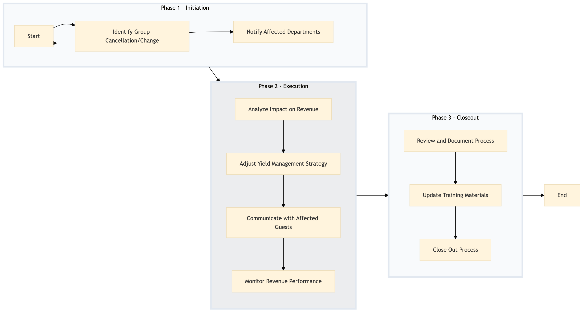

| Role | Steps |
|---|---|
| Revenue Manager | 1.1 1.2 2.1 2.2 2.4 3.1 3.2 3.3 |
| Front Desk Agent | 2.3 |
| Executive Housekeeper | 3.1 3.2 |
| Step | Name | Role | System | Input | Output | KPI | Dec? | Exc? | Pain Point / Risk |
|---|---|---|---|---|---|---|---|---|---|
| 1.1 | Identify Group Cancellation/Change | Revenue Manager | Oracle OPERA Cloud | Group reservation data | Report of affected rooms and dates | Less than 5 minutes | Y | N | Delayed detection of group cancellations can lead to lost revenue opportunities. |
| 1.2 | Notify Affected Departments | Revenue Manager | Oracle OPERA Cloud, Birchstreet Procurement | Report of affected rooms and dates | Notifications to Housekeeping, Food & Beverage, and Procurement | Less than 10 minutes | N | Y | Failure to notify departments in a timely manner can result in operational inefficiencies. |
| 2.1 | Analyze Impact on Revenue | Revenue Manager | IDeaS G3 RMS, Oracle OPERA Cloud | Current and historical revenue data | Impact analysis report | Less than 15 minutes | Y | N | Inaccurate impact analysis can lead to suboptimal decision-making. |
| 2.2 | Adjust Yield Management Strategy | Revenue Manager | IDeaS G3 RMS, Oracle OPERA Cloud | Impact analysis report | Updated rate and availability settings | Less than 20 minutes | N | Y | Improper adjustment of rates can affect guest satisfaction and occupancy. |
| 2.3 | Communicate with Affected Guests | Front Desk Agent, Revenue Manager | Oracle OPERA Cloud, Marriott Bonvoy CRM | Updated rate and availability settings | Guest communication logs | Less than 30 minutes per guest | N | Y | Poor communication can lead to guest dissatisfaction and negative reviews. |
| 2.4 | Monitor Revenue Performance | Revenue Manager | IDeaS G3 RMS, Oracle OPERA Cloud | Real-time revenue data | Performance dashboard | Continuous monitoring | Y | N | Lack of real-time monitoring can delay necessary adjustments. |
| 3.1 | Review and Document Process | Revenue Manager, Executive Housekeeper | Oracle OPERA Cloud, Microsoft Power BI | Process logs and performance data | Process review report | Less than 1 hour | N | Y | Inadequate documentation can hinder future process improvements. |
| 3.2 | Update Training Materials | Revenue Manager, Executive Housekeeper | Oracle OPERA Cloud, Microsoft Power BI | Process review report | Updated training materials | Less than 1 hour | N | Y | Outdated training materials can lead to inconsistent execution. |
| 3.3 | Close Out Process | Revenue Manager | Oracle OPERA Cloud, Microsoft Power BI | Final performance data and review report | Process closure documentation | Less than 10 minutes | N | Y | Failure to properly close out the process can lead to confusion. |
The Group Displacement Analysis process is a structured approach used by Marriott full-service hotels to evaluate and manage the impact of group cancellations or changes on revenue management strategies. This ensures that the hotel can quickly adapt its pricing and availability to maximize occupancy and profitability.